Crawling Data Polutan Daerah Bangkalan#
Business Understanding: Analisis dan Pemantauan Kualitas Udara Lokal#
1. Latar Belakang#
Seiring dengan peningkatan urbanisasi, aktivitas industri, dan volume kendaraan bermotor, kualitas udara di berbagai daerah mengalami penurunan yang signifikan. Penurunan kualitas udara ini berbanding lurus dengan peningkatan risiko kesehatan masyarakat dan kerusakan lingkungan. Oleh karena itu, tugas untuk mengetahui, menganalisis, dan memantau kualitas udara di daerah masing-masing menjadi sangat krusial sebagai langkah mitigasi awal dan dasar pengambilan keputusan strategis.
2. Tujuan Bisnis (Business Objectives)#
Tugas pemantauan dan analisis kualitas udara (khususnya untuk polutan seperti NO2, CO, dan SO2) memiliki beberapa tujuan utama:
Pemantauan Kondisi Lingkungan: Mendapatkan gambaran yang akurat, terukur, dan real-time atau historis mengenai tingkat polusi udara di suatu wilayah spesifik (misalnya tingkat emisi di tingkat kabupaten/kota).
Identifikasi Tren dan Pola: Mengetahui kapan dan di mana lonjakan polutan sering terjadi (misalnya saat jam sibuk, musim kemarau, atau di sekitar kawasan industri).
Peringatan Dini (Early Warning System): Menciptakan dasar sistem informasi yang dapat memberikan peringatan kepada masyarakat ketika kualitas udara mencapai level berbahaya.
Evaluasi Kebijakan: Mengukur efektivitas kebijakan lingkungan yang sudah berjalan, seperti pembatasan kendaraan bermotor atau penegakan standar emisi pabrik.
Data Understanding: Analisis Data Kualitas Udara (Polutan) Bangkalan#
1. Sumber Data (Data Source)#
Data kualitas udara yang digunakan bersumber dari pantauan satelit penginderaan jauh Sentinel-5P (S5P) Precursor. Satelit ini dilengkapi instrumen TROPOMI yang sangat sensitif dalam mendeteksi komposisi gas di atmosfer. Pengambilan data dilakukan secara komputasional (crawling) menggunakan platform Copernicus Data Space melalui pustaka/API openeo.
2. Spesifikasi Pengambilan Data (Data Scope)#
Cakupan Spasial (Spatial Extent): Pengambilan data difokuskan secara eksklusif pada Area of Interest (AOI) Kabupaten Bangkalan, Pulau Madura, Provinsi Jawa Timur. Ekstraksi menggunakan Bounding Box pada koordinat Bujur (
112.68sampai113.09) dan Lintang (-7.20sampai-6.89), yang mencakup daratan Bangkalan dan pesisir sekitarnya.Cakupan Temporal (Temporal Extent): Data historis ditarik mulai dari 1 Januari 2025 hingga 26 Agustus 2026 guna menangkap variasi harian, bulanan, maupun musiman.
Agregasi (Aggregation):
Temporal: Data harian diagregasi dengan menghitung nilai rata-rata (daily mean) untuk menghindari duplikasi observasi pada hari yang sama.
Spasial: Seluruh nilai piksel satelit yang jatuh di dalam batas koordinat Bangkalan dirata-ratakan (spatial mean), menghasilkan satu nilai representatif untuk keseluruhan area pada hari tersebut.
3. Deskripsi Variabel (Features Description)#
Terdapat tiga variabel polutan utama yang diukur untuk wilayah Bangkalan:
NO2 (Nitrogen Dioksida): Gas buang yang sering menjadi indikator pembakaran bahan bakar fosil, sangat relevan untuk memantau emisi dari peningkatan volume lalu lintas bermotor (misalnya dari arah Surabaya ke Bangkalan).
CO (Karbon Monoksida): Gas beracun tak berbau yang berasal dari pembakaran tidak sempurna, mencerminkan polusi dari kendaraan bermotor atau aktivitas pembakaran lahan/biomassa.
SO2 (Sulfur Dioksida): Polutan yang umumnya mengindikasikan aktivitas industri (seperti pembangkit listrik atau pabrik padat energi) atau pembakaran material yang mengandung sulfur.
Date (Tanggal): Indeks waktu perekaman dalam format tabular
YYYY-MM-DD.
4. Format dan Struktur Data (Data Formats)#
Alur penarikan (crawling) menghasilkan dua tahap format data:
Intermediate Data (NetCDF /
.nc): File mentah hasil unduhan (batch job OpenEO) sepertiNO2Bangkalan Terkini.nc. Format multidimensi ini memuat koordinat spasial (x,y), dimensi waktu (t), dan konsentrasi gas.Ready-to-Use Data (CSV /
.csv): File hasil pemrosesan (misal:NO2_Bangkalan_timeseries_terkini.csv) yang telah diubah menjadi tabel timeseries dua dimensi. File ini sangat ringan dan siap digunakan untuk pemodelan Machine Learning atau visualisasi, hanya berisi kolomdatedan nilai konsentrasi polutannya.
5. Pertimbangan Kualitas Data (Data Quality Considerations)#
Dalam proses pembersihan dan analisis lanjutan untuk data Bangkalan ini, beberapa hal perlu diperhatikan:
Missing Values akibat Cuaca: Sebagai wilayah tropis dan pesisir, tutupan awan yang tebal di atas langit Madura pada hari tertentu dapat menghalangi sensor satelit, yang mungkin menghasilkan baris data kosong (NaN) yang perlu diimputasi.
Satuan Pengukuran: Nilai konsentrasi asli dari satelit umumnya dalam satuan mol/m². Perlu dilakukan normalisasi atau konversi jika data ini ingin dibandingkan secara langsung dengan standar indeks kualitas udara (AQI/ISPU) lokal.
Outliers (Pencilan): Nilai polutan yang melompat drastis pada tanggal tertentu harus diinvestigasi lebih lanjut, apakah itu noise sensor atau benar-benar ada fenomena lokal di Bangkalan (seperti kemacetan ekstrem, kebakaran, dll).
6. Data Collection#
Menginstal pustaka Python openeo beserta seluruh dependensinya (seperti pystac, xarray, dll.) menggunakan perintah pip.
pip install openeo
Mengimpor pustaka openeo ke dalam environment agar fungsinya dapat digunakan.
import openeo
Membuat koneksi ke server OpenEO Copernicus Data Space (openeo.dataspace.copernicus.eu) dan melakukan proses autentikasi pengguna menggunakan metode OpenID Connect (OIDC).
connection = openeo.connect("openeo.dataspace.copernicus.eu").authenticate_oidc()
Mendefinisikan Area of Interest (AOI) berupa poligon koordinat, lalu memuat koleksi data satelit SENTINEL_5P_L2 untuk variabel gas NO2, CO, dan SO2 pada rentang waktu 1 Januari 2025 hingga 26 Agustus 2026. Data tersebut kemudian diagregasi menjadi rata-rata harian secara temporal, serta dirata-rata secara spasial sesuai batas area AOI.
aoi = {
"type": "Polygon",
"coordinates": [
[
[113.09, -6.89],
[112.68, -6.89],
[112.68, -7.20],
[113.09, -7.20],
[113.09, -6.89],
]
]
}
s5NO2 = connection.load_collection(
"SENTINEL_5P_L2",
temporal_extent=["2025-01-01", "2026-08-26"],
spatial_extent={
"west": 112.68,
"south": -7.20,
"east": 113.09,
"north": -6.89
},
bands=["NO2"],
)
s5CO = connection.load_collection(
"SENTINEL_5P_L2",
temporal_extent=["2025-01-01", "2026-08-26"],
spatial_extent={
"west": 112.68,
"south": -7.20,
"east": 113.09,
"north": -6.89
},
bands=["CO"],
)
s5SO2 = connection.load_collection(
"SENTINEL_5P_L2",
temporal_extent=["2025-01-01", "2026-08-26"],
spatial_extent={
"west": 112.68,
"south": -7.20,
"east": 113.09,
"north": -6.89
},
bands=["SO2"],
)
# Now aggregate by day to avoid having multiple data per day
s5p_NO2_daily = s5NO2.aggregate_temporal_period(reducer="mean", period="day")
s5p_CO_daily = s5CO.aggregate_temporal_period(reducer="mean", period="day")
s5p_SO2_daily = s5SO2.aggregate_temporal_period(reducer="mean", period="day")
# Now create a spatial aggregation to generate mean timeseries data
s5p_NO2_aoi = s5p_NO2_daily.aggregate_spatial(reducer="mean", geometries=aoi)
s5p_CO_aoi = s5p_CO_daily.aggregate_spatial(reducer="mean", geometries=aoi)
s5p_SO2_aoi = s5p_SO2_daily.aggregate_spatial(reducer="mean", geometries=aoi)
Menjalankan proses (batch job) di server untuk mengeksekusi data NO2, CO, SO2 yang telah diagregasi, dan mengunduh hasilnya ke dalam file format NetCDF
job = s5p_NO2_aoi.execute_batch(title="NO2 in Bangkalan terkini", outputfile="NO2Bangkalan Terkini.nc")
job = s5CO.execute_batch(title="CO in Bangkalan terkini", outputfile="COBangkalan Terkini.nc")
job = s5SO2.execute_batch(title="SO2 in Bangkalan terkini", outputfile="SO2Bangkalan Terkini.nc")
Menginstal pustaka netCDF4 yang diperlukan untuk membaca dan memanipulasi file dengan ekstensi .nc di Python.
pip install netCDF4
Mengimpor pustaka analisis data (netCDF4, numpy, pandas) dan membaca ketiga file NetCDF (NO2, CO, SO2) yang baru saja diunduh ke dalam variabel dataset masing-masing (dsNO2, dsCO, dsSO2)
import netCDF4
import numpy as np
import pandas as pd
dsNO2 = netCDF4.Dataset("NO2Bangkalan Terkini.nc")
dsCO = netCDF4.Dataset("COBangkalan Terkini.nc")
dsSO2 = netCDF4.Dataset("SO2Bangkalan Terkini.nc")
Mengekstrak nilai kadar NO2, CO, SO2 dan nilai waktu (t) dari dataset NO2. Kode ini kemudian mengubah format waktu menjadi tanggal string (YYYY-MM-DD), menyusunnya menjadi struktur tabel DataFrame menggunakan Pandas, dan mengekspornya menjadi file CSV.
no2 = dsNO2.variables["NO2"][:].squeeze()
timeNO2 = dsNO2.variables["t"][:]
try:
time_units = dsNO2.variables["t"].units
dates = netCDF4.num2date(timeNO2, units=time_units)
except Exception:
dates = timeNO2 # fallback kalau tidak ada units
new_dates = []
for i in range(len(dates)):
# ubah format datetime
new_date = dates[i].strftime('%Y-%m-%d')
new_dates.append(new_date)
df = pd.DataFrame({
"date": new_dates,
"NO2": no2
})
# Simpan ke CSV
df.to_csv("NO2_Bangkalan_timeseries_terkini.csv", index=False)
---------------------------------------------------------------------------
ModuleNotFoundError Traceback (most recent call last)
Cell In[1], line 1
----> 1 import pandas as pd
2 import numpy as np
3 df = pd.read_csv("./source/polutan/NO2_Bangkalan_timeseries_terkini .csv")
4 df.head(10)
ModuleNotFoundError: No module named 'pandas'
co = dsCO.variables["CO"][:].mean(axis=(1, 2))
timeCO = dsCO.variables["t"][:]
try:
time_units = dsCO.variables["t"].units
dates = netCDF4.num2date(timeCO, units=time_units)
except Exception:
dates = timeCO # fallback kalau tidak ada units
new_dates = []
for i in range(len(dates)):
# ubah format datetime
new_date = dates[i].strftime('%Y-%m-%d')
new_dates.append(new_date)
df = pd.DataFrame({
"date": new_dates,
"CO": co
})
# Simpan ke CSV
df.to_csv("CO_Bangkalan_timeseries_terkini.csv", index=False)
so2 = dsSO2.variables["SO2"][:].mean(axis=(1, 2))
timeSO2 = dsSO2.variables["t"][:]
try:
time_units = dsSO2.variables["t"].units
dates = netCDF4.num2date(timeSO2, units=time_units)
except Exception:
dates = timeSO2 # fallback kalau tidak ada units
new_dates = []
for i in range(len(dates)):
# ubah format datetime
new_date = dates[i].strftime('%Y-%m-%d')
new_dates.append(new_date)
df = pd.DataFrame({
"date": new_dates,
"SO2": so2
})
# Simpan ke CSV
df.to_csv("SO2_Bangkalan_timeseries_terkini.csv", index=False)
o3 = dsO3.variables["O3"][:].squeeze()
timeO3 = dsO3.variables["t"][:]
try:
time_units = dsO3.variables["t"].units
dates = netCDF4.num2date(timeO3, units=time_units)
except Exception:
dates = timeO3 # fallback kalau tidak ada units
new_dates = []
for i in range(len(dates)):
# ubah format datetime
new_date = dates[i].strftime('%Y-%m-%d')
new_dates.append(new_date)
df = pd.DataFrame({
"date": new_dates,
"O3": o3
})
# Simpan ke CSV
df.to_csv("O3_Bangkalan_timeseries_terkini.csv", index=False)
7. Missing Values#
Missing values (nilai yang hilang) adalah kondisi di mana terdapat informasi yang kosong atau tidak terekam dalam dataset. Pada kasus data deret waktu yang diambil menggunakan satelit, kekosongan data ini wajar terjadi, biasanya akibat faktor cuaca (area tertutup awan tebal sehingga sensor tidak dapat membaca permukaan bumi) atau karena orbit satelit yang tidak merekam area tersebut pada hari tertentu. Mengidentifikasi keberadaan missing values sangat penting sebelum melakukan analisis lebih lanjut.
Pada proyek ini, kita mengecek dua bentuk missing values:
Tanggal yang Hilang: Memastikan apakah ada urutan hari yang terlewat (bolong) dari rentang waktu awal hingga akhir (25 Agustus 2025 - 25 Agustus 2026).
Data yang Hilang: Memeriksa jumlah nilai polutan yang kosong (
NaN) pada record tanggal yang sudah terekam.
Tanggal Yang Hilang#
NO2
import pandas as pd
df = pd.read_csv("./source/polutan/NO2_Bangkalan_timeseries_terkini .csv")
df['date'] = pd.to_datetime(df['date'])
# Buat rentang tanggal lengkap
start_date = "2025-01-01"
end_date = "2026-08-26"
full_range = pd.date_range(start=start_date, end=end_date, freq='D')
# Cek tanggal yang hilang
missing_dates = full_range.difference(df['date'])
print(f"Jumlah hari missing: {len(missing_dates)}")
print("Daftar tanggal missing:")
print(missing_dates)
CO
import pandas as pd
df = pd.read_csv("./source/polutan/CO_Bangkalan_timeseries_terkini.csv")
df['date'] = pd.to_datetime(df['date'])
# Buat rentang tanggal lengkap
start_date = "2025-01-01"
end_date = "2026-08-26"
full_range = pd.date_range(start=start_date, end=end_date, freq='D')
# Cek tanggal yang hilang
missing_dates = full_range.difference(df['date'])
print(f"Jumlah hari missing: {len(missing_dates)}")
print("Daftar tanggal missing:")
print(missing_dates)
SO2
import pandas as pd
df = pd.read_csv("./source/polutan/SO2_Bangkalan_timeseries_terkini.csv")
df['date'] = pd.to_datetime(df['date'])
# Buat rentang tanggal lengkap
start_date = "2025-01-01"
end_date = "2026-08-26"
full_range = pd.date_range(start=start_date, end=end_date, freq='D')
# Cek tanggal yang hilang
missing_dates = full_range.difference(df['date'])
print(f"Jumlah hari missing: {len(missing_dates)}")
print("Daftar tanggal missing:")
print(missing_dates)
O3
import pandas as pd
df = pd.read_csv("./source/polutan/O3_Bangkalan_timeseries_terkini.csv")
df['date'] = pd.to_datetime(df['date'])
# Buat rentang tanggal lengkap
start_date = "2025-01-01"
end_date = "2026-08-26"
full_range = pd.date_range(start=start_date, end=end_date, freq='D')
# Cek tanggal yang hilang
missing_dates = full_range.difference(df['date'])
print(f"Jumlah hari missing: {len(missing_dates)}")
print("Daftar tanggal missing:")
print(missing_dates)
Data Yang Hilang#
Selain urutan tanggal, kita juga mengecek jumlah baris data yang memiliki nilai konsentrasi polutan kosong (NaN).
NO₂
df = pd.read_csv("./source/polutan/NO2_Bangkalan_timeseries_terkini .csv")
missing_value = df['NO2'].isna().sum()
print(missing_value)
Implementasi pada tools Orange Data Mining
{kind=link}
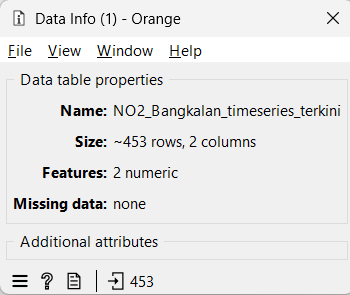
CO
df = pd.read_csv("./source/polutan/CO_Bangkalan_timeseries_terkini.csv")
missing_value = df['CO'].isna().sum()
print(missing_value)
Implementasi pada tools Orange Data Mining
{kind=link}
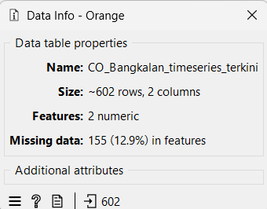
SO₂
df = pd.read_csv("./source/polutan/SO2_Bangkalan_timeseries_terkini.csv")
missing_value = df['SO2'].isna().sum()
print(missing_value)
Implementasi pada tools Orange Data Mining
{kind=link}
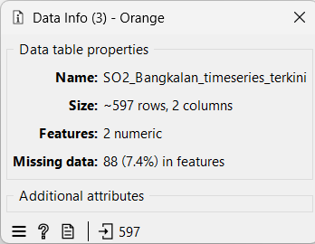
O₃
df = pd.read_csv("./source/polutan/O3_Bangkalan_timeseries_terkini.csv")
missing_value = df['O3'].isna().sum()
print(missing_value)
Implementasi pada tools Orange Data Mining
{kind=link}
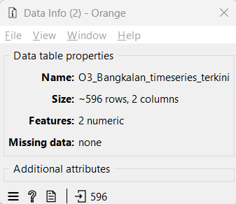
8. Outliers#
Outliers (pencilan) adalah titik data yang nilainya menyimpang secara drastis atau ekstrem dari mayoritas distribusi data lainnya. Pada data deret waktu kualitas udara, outlier bisa jadi merupakan lonjakan polusi nyata yang terjadi akibat peristiwa tertentu (misalnya kebakaran hutan atau peningkatan aktivitas industri mendadak), atau bisa juga sekadar noise / error pada pembacaan sensor satelit.
Pada tahap data understanding ini, kita mengeksplorasi outliers menggunakan algoritma Isolation Forest dari pustaka scikit-learn. Algoritma deteksi anomali ini bekerja dengan cara “mengisolasi” observasi melalui pemisahan data secara acak, di mana anomali akan lebih cepat/mudah diisolasi. Kita mengatur parameter contamination (estimasi persentase outlier di dalam dataset) sebesar 5%. Hasil prediksi dari model yang bernilai -1 menandakan bahwa baris tersebut terdeteksi sebagai outlier.
NO2
import pandas as pd
from sklearn.ensemble import IsolationForest
df = pd.read_csv("./source/polutan/NO2_Bangkalan_timeseries_terkini .csv")
df_clean = df.dropna(subset=['NO2']).copy()
model = IsolationForest(contamination=0.05, random_state=42) # contamination 0.05 = 5%
pred = model.fit_predict(df_clean[['NO2']])
# Nilai -1 merepresentasikan outlier
jumlah_outlier = (pred == -1).sum()
print("Jumlah outlier:", jumlah_outlier)
Implementasi pada tools Orange Data Mining
{kind=link}
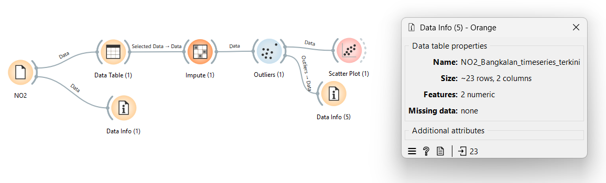
{kind=link}
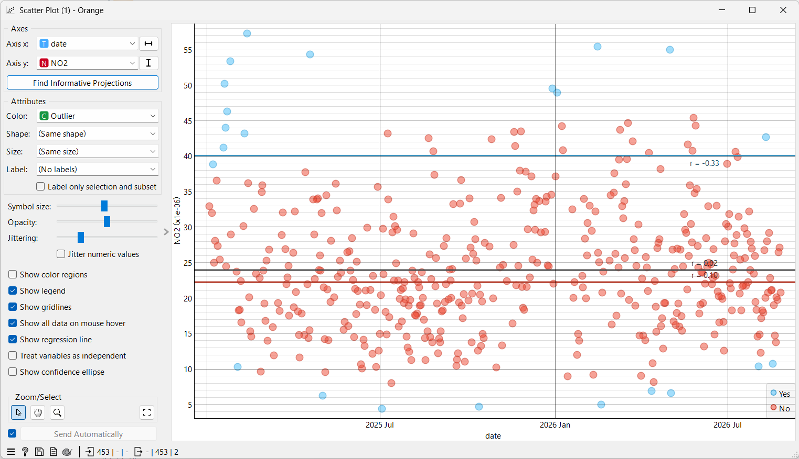
CO
import pandas as pd
from sklearn.ensemble import IsolationForest
df = pd.read_csv("./source/polutan/CO_Bangkalan_timeseries_terkini.csv")
df_clean = df.dropna(subset=['CO']).copy()
model = IsolationForest(contamination=0.05, random_state=42) # contamination 0.05 = 5%
pred = model.fit_predict(df_clean[['CO']])
# Nilai -1 merepresentasikan outlier
jumlah_outlier = (pred == -1).sum()
print("Jumlah outlier:", jumlah_outlier)
Implementasi pada tools Orange Data Mining
{kind=link}
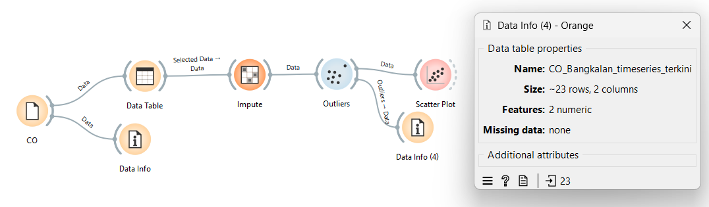
{kind=link}
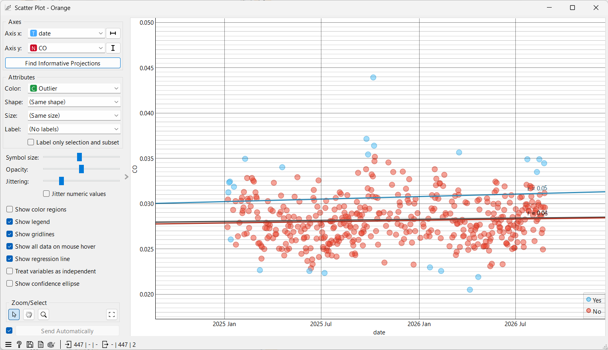
SO2
import pandas as pd
from sklearn.ensemble import IsolationForest
df = pd.read_csv("./source/polutan/SO2_Bangkalan_timeseries_terkini.csv")
df_clean = df.dropna(subset=['SO2']).copy()
model = IsolationForest(contamination=0.05, random_state=42) # contamination 0.05 = 5%
pred = model.fit_predict(df_clean[['SO2']])
# Nilai -1 merepresentasikan outlier
jumlah_outlier = (pred == -1).sum()
print("Jumlah outlier:", jumlah_outlier)
Implementasi pada tools Orange Data Mining
{kind=link}
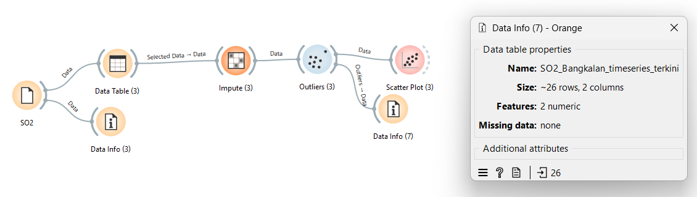
{kind=link}
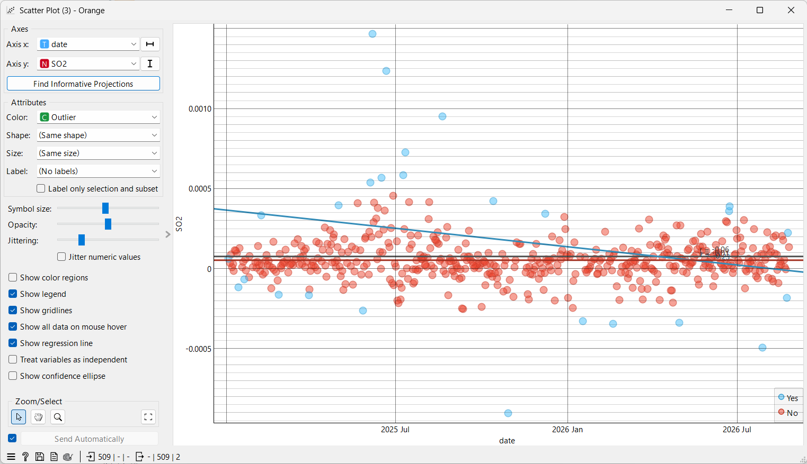
O3
import pandas as pd
from sklearn.ensemble import IsolationForest
df = pd.read_csv("./source/polutan/O3_Bangkalan_timeseries_terkini.csv")
df_clean = df.dropna(subset=['O3']).copy()
model = IsolationForest(contamination=0.05, random_state=42) # contamination 0.05 = 5%
pred = model.fit_predict(df_clean[['O3']])
# Nilai -1 merepresentasikan outlier
jumlah_outlier = (pred == -1).sum()
print("Jumlah outlier:", jumlah_outlier)
Implementasi pada tools Orange Data Mining
{kind=link}
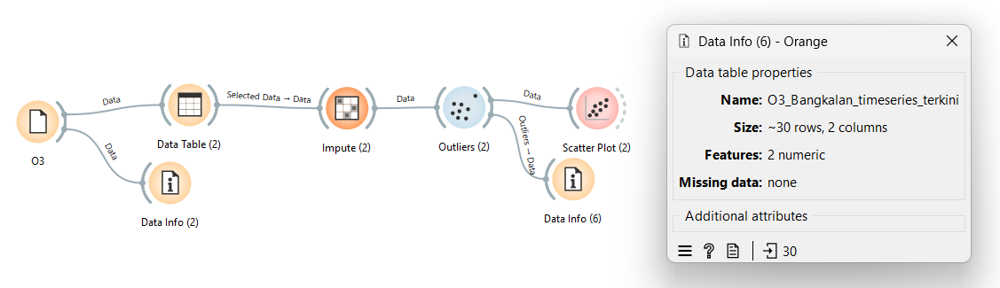
{kind=link}
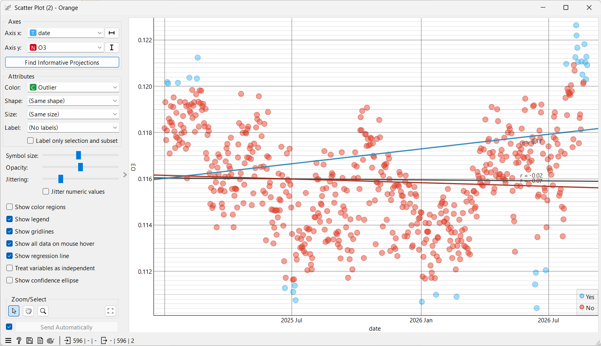
Result Data Polutan#
Setelah setiap dataset polutan (NO2, CO, SO2, dan O3) dinormalisasi dan dianalisis nilai kosong serta pencilan (outliers)-nya, langkah selanjutnya adalah menggabungkan keempat file tersebut menjadi satu dataset terpadu. Karena keempat data tersebut direkam dengan rentang waktu harian yang sama, kita dapat menggabungkannya berdasarkan kolom tanggal (date).
import pandas as pd
df_o3 = pd.read_csv("O3_Bangkalan_timeseries_terkini.csv")
df_co = pd.read_csv("CO_Bangkalan_timeseries_terkini.csv")
df_no2 = pd.read_csv("NO2_Bangkalan_timeseries_terkini.csv")
df_so2 = pd.read_csv("SO2_Bangkalan_timeseries_terkini.csv")
dataframe_merged = pd.DataFrame({
"date": df_o3['date'],
"NO2": df_no2['NO2'],
"CO": df_co['CO'],
"SO2": df_so2['SO2'],
"O3": df_o3['O3'],
})
dataframe_merged.to_csv("Polutan_Bangkalan.csv", index=False)